luciano teixeira, product designer especialista
há mais de 10 anos eu penso, desenho e entrego produto digital. hoje, uso ia generativa em cada etapa do processo — da pesquisa ao protótipo — pra sair da ideia ao produto testável muito mais rápido.
ver o case da AYA Books (+2 mi downloads)sou product designer especialista, com mais de 10 anos dedicados a transformar problema complexo de negócio em produto digital simples de usar. cuido do processo inteiro — da descoberta do problema ao design system que sustenta o produto crescendo — apoiado em heurísticas de usabilidade, acessibilidade (WCAG) e jobs-to-be-done, sempre com o mesmo objetivo: cada decisão de design resolver um problema real.
meu maior diferencial é usar ia generativa e automação (com n8n) em cada etapa do processo:
além do processo de design, sei HTML, CSS e javascript básico. isso me ajuda a montar protótipos mais fiéis à realidade e a conversar de igual pra igual com o time de desenvolvimento — o que evita atrito na hora de implementar.
acompanho de perto como as pessoas usam o produto, com GA4, Clarity e Firebase. gosto de transformar dados brutos em decisão de design que muda o negócio de verdade.
fora do trabalho, futebol, fotografia e uma boa viagem de praia com a família estão sempre na lista.
meu foco é transformar dados e ia em produto que funciona de verdade.
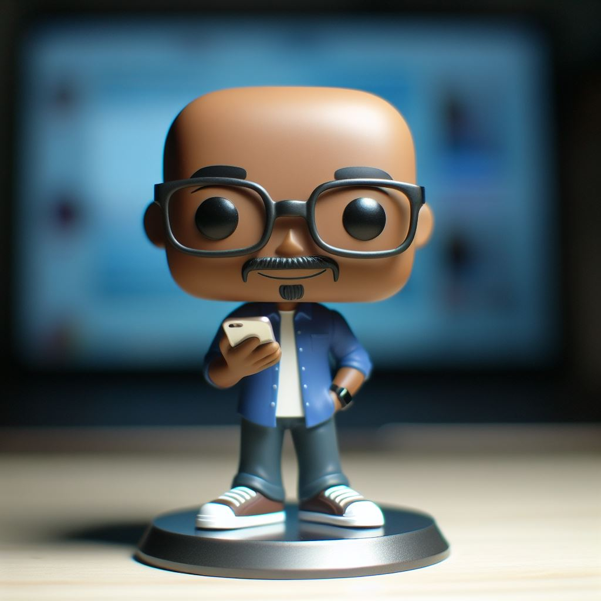
Figma, Adobe XD, Illustrator, Photoshop, Azure, Asana, Metabase, Mixpanel.
ia: Gemini, ChatGPT, MidJourney, n8n (automação).
pós-graduação em mídias digitais.
superior em marketing.
case principal
+2 mi de downloads
o desafio: desenhar e evoluir a experiência de um leitor digital que já passa de 2 milhões de downloads, ajudando a democratizar o acesso à leitura no Brasil.
o que eu fiz:
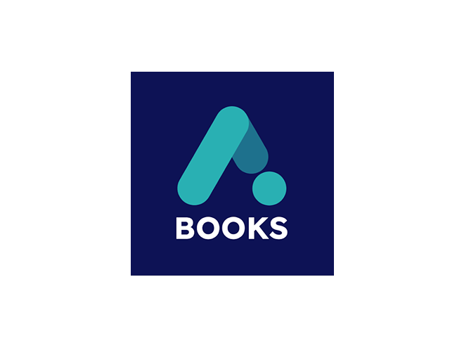
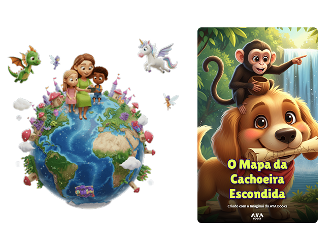
case: ia criando vínculo em família
mais de 10 mil histórias criadas já no primeiro mês
o desafio: criar, em poucas semanas, um MVP de gerador de histórias personalizadas com ia — simples o bastante pra tirar o medo da tecnologia e criar um momento mágico em família.
o que o produto entrega:
minha responsabilidade, do início ao fim:
AYA Bancah: notícias, revistas e jornais digitais
AYA Ensinah: apostilas e livros
AYA Equilibrah: vídeos e conteúdo de bem-estar
AYA Play: vídeos e conteúdo da Globo CBN
também participei da concepção, estratégia, discovery e desenvolvimento desses apps (android e ios) e sites.
alguns recortes de tela e sistema que desenhei ao longo dos anos.
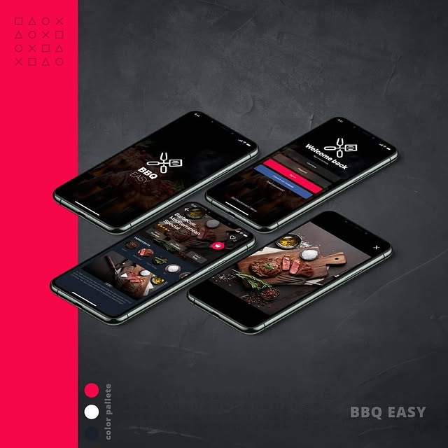
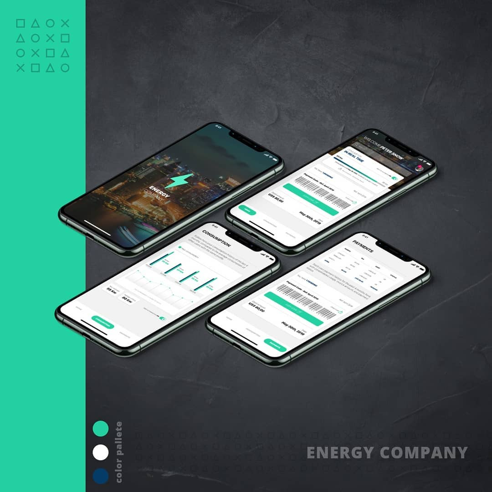
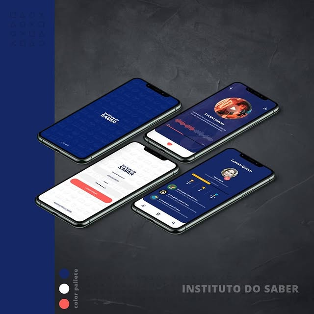
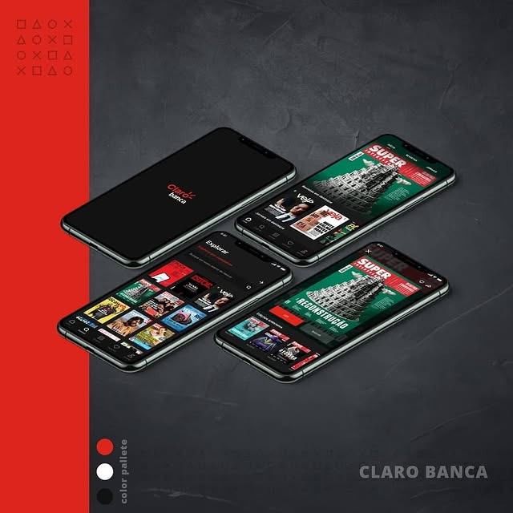
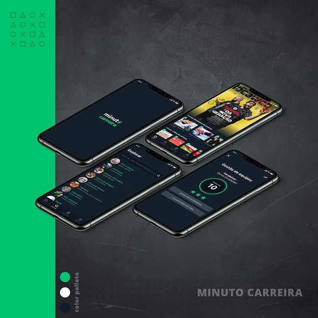
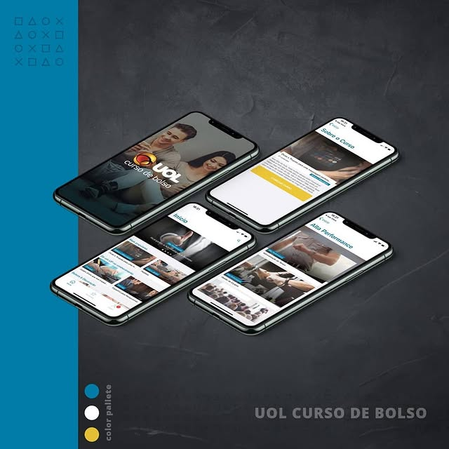
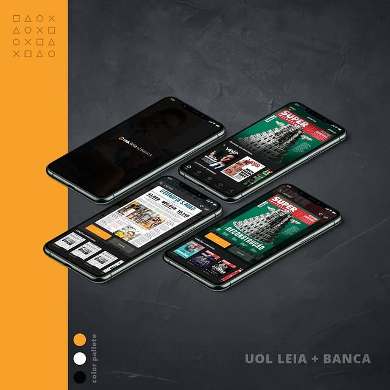
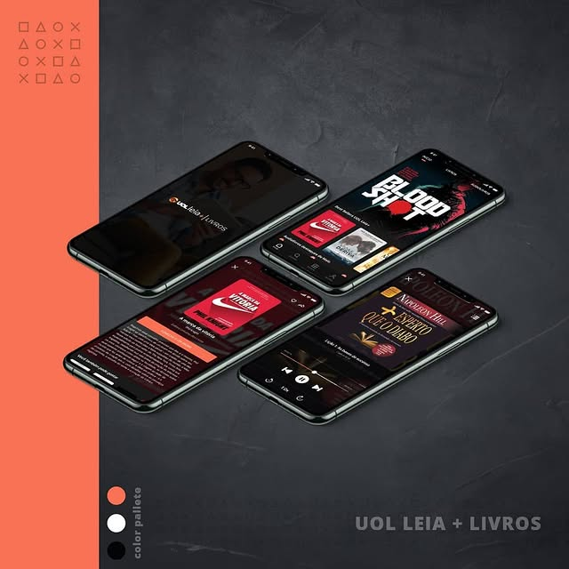
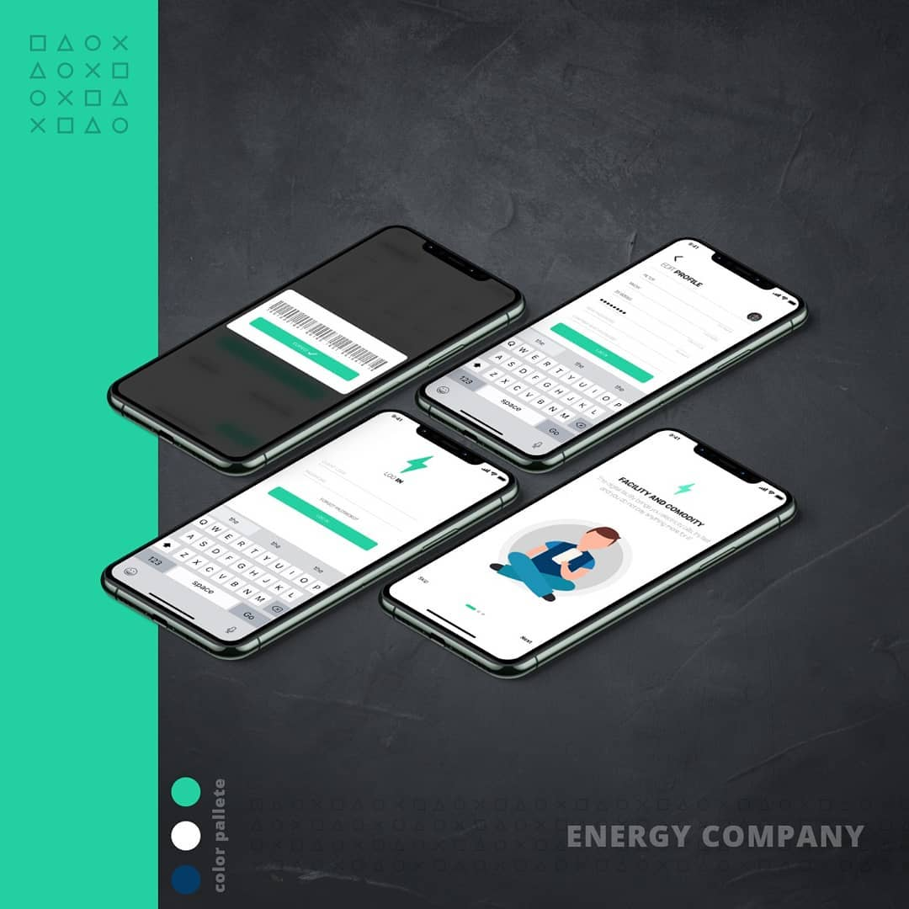
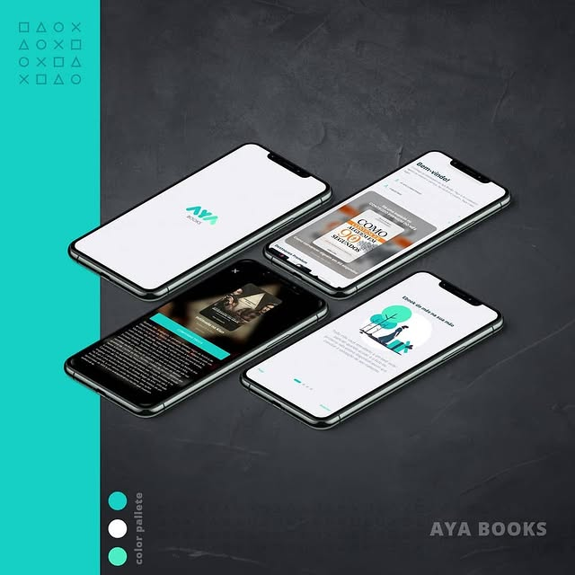
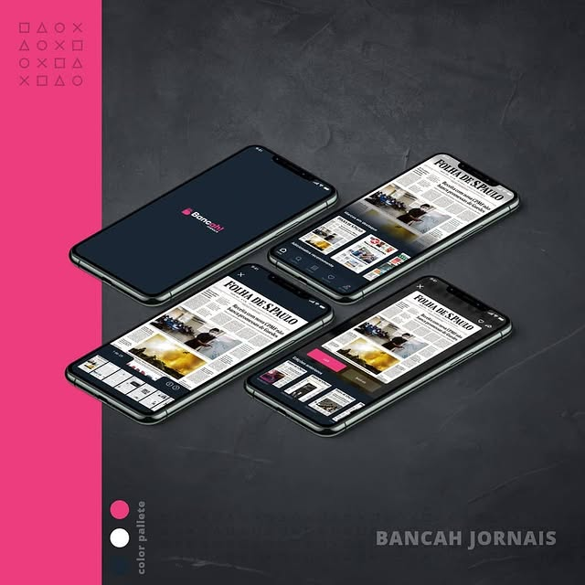
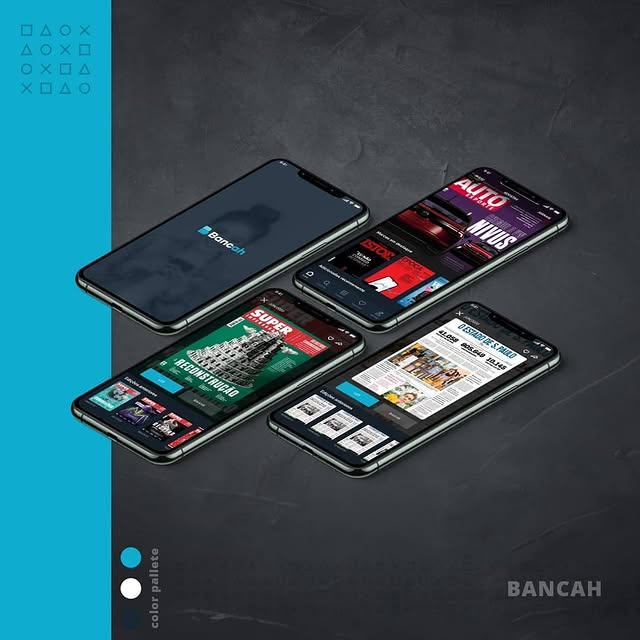
separo o projeto em duas fases, descoberta e entrega, pra garantir que a gente resolve o problema certo antes de sair desenhando.
lidero sprints curtos e intensos pra testar hipóteses e validar MVP rápido, sem gastar meses decidindo.
crio o hábito de feedback estruturado no time, pra melhorar o trabalho sem virar bagunça.
uso dados qualitativos e quantitativos, incluindo teste A/B, pra decidir com base em fato — não em achismo.
mais de 10 anos de carreira
agosto de 2022 – hoje
lidero o design de produtos complexos, juntando ux, ia generativa e estratégia de negócio.
novembro de 2012 – agosto de 2022 (9 anos e 10 meses)
passei quase 10 anos no ciclo completo de desenvolvimento de software, criando interface e experiência de usuário.
novembro de 2009 – novembro de 2012 (3 anos e 1 mês)
desenvolvi e mantive loja virtual e site — foi ali que aprendi a base técnica de HTML, CSS e JS que uso até hoje.
outubro de 2006 – julho de 2009 (2 anos e 10 meses)
prototipei portal, desenvolvi site e produzi identidade visual — o início da minha carreira em design digital.
tô disponível pra ajudar a transformar ideia em produto digital, usando design e ia de forma estratégica. me manda uma mensagem.
© 2026 luciano teixeira, product designer especialista.